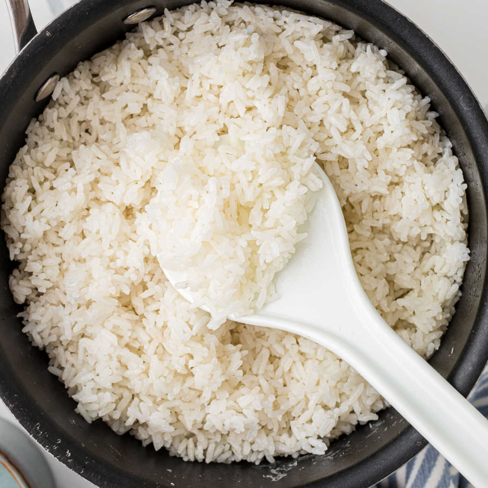

How to make Rice

Description
Everything you need to make your everyday rice
Ingredients
- Rice
- Water
- Any seasonings of your choice
Steps
- Scoop rice with your measurement cup and place it into rice bowl cooker.
- Wash rice in water at least three times or until water becomes clear.
- Fill up water to the measurement of cups of rice.
- Put rice bowl in rice cooker.
- Plug in rice cooker and press the tab to "cook" to turn on rice cooker.